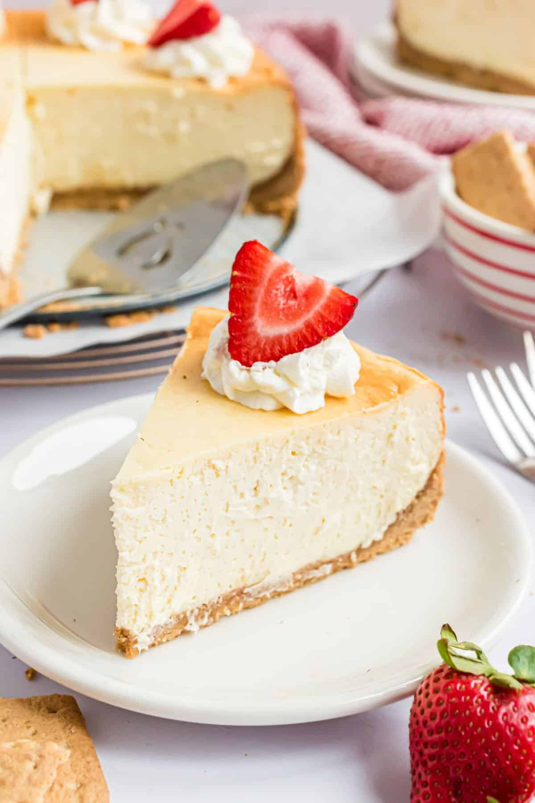

Home
Cheesecake Recipe

Description
These classic cheesecakes are rich, creamy, and full of smooth, indulgent flavor. With a velvety filling and a buttery graham cracker crust, they offer the perfect balance between light and decadent. Made with simple ingredients and easy-to-follow steps, this recipe is great for beginners yet impressive enough for special occasions. Perfect for celebrations, family gatherings, or enjoying as a comforting homemade dessert.
Ingredients
- Graham cracker crust
- Cream cheese
- Sour cream
- 4 eggs
- Vanilla extract or vanilla bean paste
- Shipped cream
Directions
- Prep the Pan: Fill a broiler pan with a couple of inches of water. Place it on the bottom of your oven and preheat to 325°F.
- Make the graham cracker pie crust: Some people like to put parchment paper circles under the pie crust. I just serve my cheesecake on the bottom plate that comes with the springform pan. If you plan on sliding the cheesecake off the pan completely, use parchment paper!
- Make the cheesecake filling: Use room temperature ingredients for BEST results!
- Bake:When the cheesecake is done, TURN OFF the oven and crack the door open very slightly. The cheesecake needs to sit for about 15 minutes undisturbed as the oven temperature gradually lowers.
- Cool:Remove the cheesecake from the oven. Immediately run a sharp knife around the edges just to separate the edges of the crust from the pan. Now leave the cheesecake to cool at room temperature for about 30 minutes. Transfer it to the fridge (still in the pan) and chill for at least 6 hours or, preferably, overnight.
- Serve:Remove the sides of the spring form pan and slide out the cheesecake. Top with cool whip and strawberries before slicing and serving!
Credit: ShugarySweets